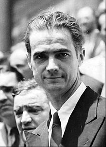

The birthplace of Howard Hughes is recorded as either Humble or Houston,
Texas. The date remains uncertain due to conflicting dates from various sources.
He repeatedly claimed that his birthday was on Christmas Eve.
A 1941 affidavit
birth certificate of Hughes that was signed by his aunt Annette Gano Lummis and
Estelle Boughton Sharp states that he was born on December 24, 1905, in Harris
County, Texas.However, his certificate of baptism recorded on October 7, 1906,
in the parish register of St. John's Episcopal Church in Keokuk, Iowa, listed
his birth as September 24, 1905 without any reference to the place of birth.
Hughes was the son of Allene Stone Gano and Howard R. Hughes Sr., a successful
inventor and businessman from Missouri. He was of English, and some French
Huguenot, ancestry, and was a descendant of John Gano, a minister who allegedly
baptized George Washington.
His father had patented the two-cone roller bit,
which allowed rotary drilling for petroleum in previously inaccessible places.
The senior Hughes made the shrewd and lucrative decision to commercialize the
invention by leasing the bits instead of selling them, and founded the Hughes
Tool Company in 1909. Hughes' uncle was the famed novelist, screenwriter, and
film director Rupert Hughes.
Hughes demonstrated interest in science and technology at a young age. In
particular, he had great engineering aptitude, building Houston's first
"wireless" radio transmitter at age 11. He went on to be one of the first
licensed ham radio operators in Houston, having the assigned callsign W5CY
(originally 5CY).
At 12, Hughes was photographed in the local newspaper,
identified as being the first boy in Houston to have a "motorized" bicycle,
which he had built from parts from his father's steam engine. He was an
indifferent student, with a liking for mathematics, flying, and mechanics. He
took his first flying lesson at 14, and later attended math and aeronautical
engineering courses at Caltech. The red brick house where Hughes lived as a
teenager at 3921 Yoakum St., Houston today serves as the headquarters of the
Theology Department of the University of St. Thomas.
Allene Hughes died in March 1922 from complications of an ectopic pregnancy.
Howard Hughes Sr. died of a heart attack in 1924. Their deaths apparently
inspired Hughes to include the creation of a medical research laboratory in the
will that he signed in 1925 at age 19. Howard Sr.'s will had not been updated
since Allene's death, and Hughes inherited 75 percent of the family fortune. On
his 19th birthday, Hughes was declared an emancipated minor, enabling him to
take full control of his life.
Hughes was an excellent and enthusiastic golfer from a young age, often scoring
near par figures, and held a handicap of three during his twenties. He played
frequently with top players, including Gene Sarazen. Hughes rarely played
competitively, and gradually gave up his passion for the sport to pursue other
interests
Hughes withdrew from Rice University shortly after his father's death. On June
1, 1925, he married Ella Botts Rice, daughter of David Rice and Martha Lawson
Botts of Houston. They moved to Los Angeles, where he hoped to make a name for
himself as a filmmaker.